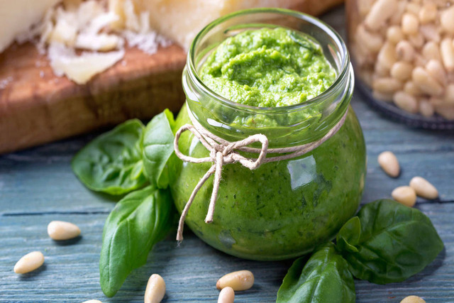
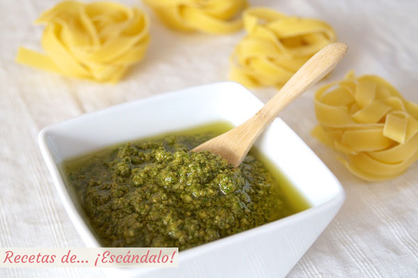

Salsa pesto



Ingredientes:
- 50 g de hojas de albahaca fresca (aprox. 2 tazas)
- 50 g de queso Parmesano o Pecorino rallado
- 30 g de piñones (puedes sustituir por nueces o almendras)
- 1 diente de ajo pequeño
- 100 ml de aceite de oliva virgen extra
- Sal al gusto
Preparación:
-
Método tradicional (mortero):
- En un mortero, machaca el ajo con una pizca de sal hasta hacer una pasta.
- Añade los piñones y tritura hasta obtener una pasta cremosa.
- Incorpora la albahaca poco a poco, triturando con movimientos circulares hasta que suelte su aroma.
- Agrega el queso rallado y sigue mezclando.
- Finalmente, vierte el aceite de oliva poco a poco mientras sigues triturando hasta conseguir una salsa homogénea.
-
Método rápido (batidora o procesador de alimentos):
- Coloca todos los ingredientes en la batidora o procesador.
- Tritura a baja velocidad, añadiendo el aceite poco a poco hasta obtener la textura deseada.
- Ajusta la sal si es necesario.
Consejo:
- No batas demasiado para evitar que la albahaca se caliente y se oxide.
- Puedes conservar el pesto en un frasco con una capa de aceite encima para que dure más tiempo en la nevera (hasta 1 semana).